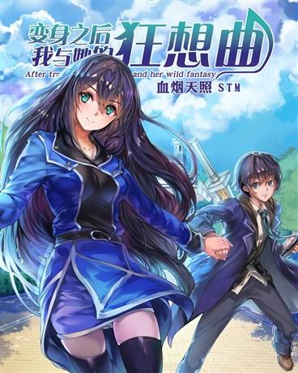

Dichtruyendrop

After Transformation, Mine And Her Wild Fantasy
Trạng thái: Đang cập nhật • Lượt xem: 379,959
📖 Đọc từ 84
▶️ Kênh Tik Tok
MÔ TẢ 🔽
Tỉnh lại, mất trí nhớ, tự nhiên thấy mình có 2 cơ thể và có thể điều khiển cả hai cùng một lúc.
📚 Danh sách chương
Chương 101
1/2/2026
Chương 100
29/1/2026
Chương 99
13/1/2026
Chương 98
11/1/2026
Chương 97
9/1/2026
Chương 96
8/1/2026
Chương 95
5/1/2026
Chương 94
3/1/2026
Chương 93
3/1/2026
Chương 92
2/1/2026
Chương 91
1/1/2026
Chương 90
1/1/2026
Chương 89
31/12/2025
Chương 88
30/12/2025
Chương 87
29/12/2025
Chương 86
29/12/2025
Chương 85
28/12/2025
Chương 84
19/12/2025